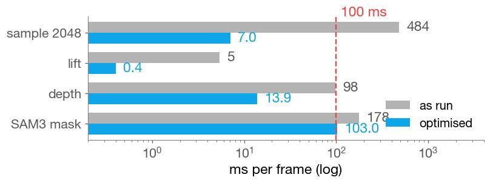
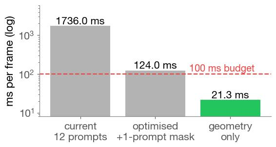
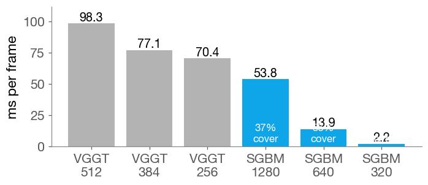
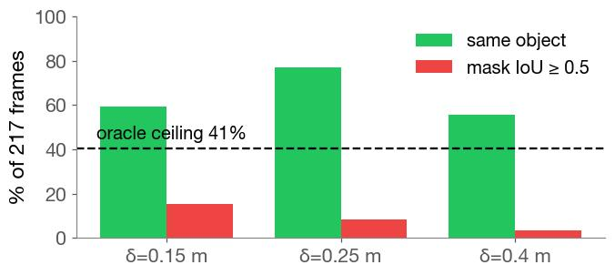
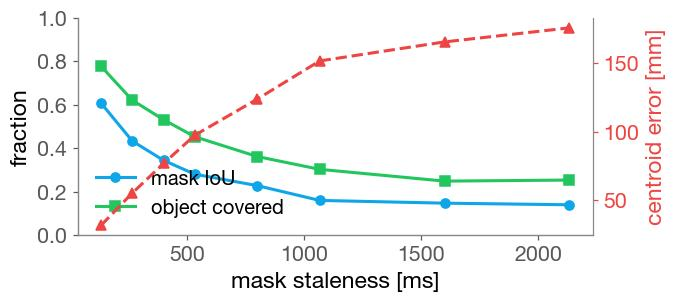
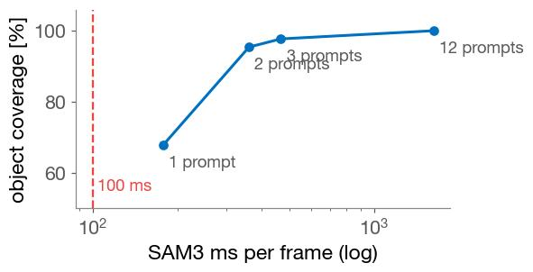

Can input generation run at policy rate?
BMW & Frontier Demo · logistics · RGB-D to object points against a 100 ms budget
Lab meeting
2026. 09. 02
Presented by beomjun
Overview
[TL;DR] Geometry fits in 21 ms; the semantic mask does not.
- Done: every stage timed, one GPU
- Fixed: sampler was 96% of cost
- Blocker: mask floor is 103 ms


A100-80GB, worker-node113 · 8 ep0 frames · wall clock, warm-up call discarded · VLA reference ≈100 ms end-to-end
Method (1): What was timed, and against what
Same frames, same GPU, one variable at a time.
- Latency is a sum, not throughput
- Optimisations keep the points identical
- Ground truth: the mask-based selection
| Stage | Variants timed | Compared against |
|---|---|---|
| mask | 1280·640·320 px, 1–12 prompts | stored full-res mask (IoU) |
| depth | VGGT 512/384/256 × fp32/bf16; SGBM 3 res | VGGT depth on the object mask |
| lift | CPU vs GPU unprojection | identical points |
| sample | numpy FPS, GPU FPS, block-FPS, voxel | true FPS (Hausdorff, radius) |
| selection | depth-only clustering + oracle sweep | 217/217 reproduced cache |

block-FPS = 32 sequential top-k steps instead of a 2047-iteration Python loop; quality checked, not assumed
Results
- The budget, stage by stage
- 601 ms today, 21 ms for geometry alone
- calibrated stereo beats learned depth here
- Why the mask cannot leave the loop
- What SAM 3D adds
Caveat · SGBM reads 7–8% farther than VGGT; the shards were built with VGGT depth, so switching needs re-preprocessing
Results
- The budget, stage by stage
- Why the mask cannot leave the loop
- the object is not the nearest surface
- even an oracle selector reaches IoU 0.5 on 41%
- What SAM 3D adds



hands and forearms are nearer than the object in 54 of 217 frames; where it is grasped, hand and object share a surface with no depth step
Results
- The budget, stage by stage
- Why the mask cannot leave the loop
- What SAM 3D adds
- full surface, including unseen faces
- quality and cost being measured now
accuracy vs the VGGT cloud · invented surface · ICP scale
temporal consistency · seconds per object · turntable
8 ep0 frames, depths 0.45–0.84 m
ETA · SAM 3D env build queued (job 152092), benchmark ready · ~1 h GPU once it starts → same-day update
Discussion & Action items
One blocker left, and two untested ways past it.
Discussion:
- Depth source — keep VGGT vs calibrated SGBM → SGBM, but only with re-preprocessed shards (owner)
- Mask budget — cap SAM3 to 1–2 tracked objects vs distil a small per-frame segmenter → try the cap first, it is free (owner)
- Target — is 100 ms the real requirement, or is a chunked policy allowed more? → confirm against the deployed BMW rate (owner)
Action items:
- Ship the geometry optimisations, 601 → 21 ms (agent · ready)
- SAM 3D quality and cost (agent · queued)
- Cap SAM3 max_num_objects 16 → 2 and re-time (agent · after go)
- Measure the deployed BMW policy-server rate (owner · reference)
Appendix · evidence paths · references · cut list
- Timings
- routeA_optimisation.json (jobs 152136) · routeA_sgbm_fps.json (152157) · routeA_sam3_resolution.json (152167) · sam3d_bench_routeA.json (152103)
- Selection
- viz/depth_only_select.py · depth_only_v2.py · depth_only_oracle.py · mask_staleness.py → viz/cache/depth_only_2a*.json, mask_staleness.json
- Stereo
- baseline 66.4388 mm (std 5e-5 mm over 866 rows), relative rotation 0.799° constant to 7e-8 → rectification is one-time. Intrinsics fx 863.8 fy 866.3 @1280² are owner-supplied
- Sampler
- numpy 484.5 → GPU loop 196.7 → block-FPS(64) 7.0 ms; 6.8 mm one-sided Hausdorff vs true FPS. Voxel is 0.5 ms but yields 679 points, not 2048 — not equivalent
- Not measured
- cv2.cuda StereoSGM (not in that build) · pytorch3d sample_farthest_points (not installed in the vggt env, though it is the production path in dex-point-policy/deployment/.../geometry.py)
- Ignore
- the per-frame timers inside routeA_sam3_resolution.json — SAM3's stream yields in bursts; the table uses wall time between its own propagation log lines
- Companion record: all objects, nearest one — where these masks and clouds come from
- StereoSGBM (OpenCV) · VGGT-Omega · SAM 3.1 video propagation · farthest-point sampling
Cut: pipelining as a latency fix (it lowers the period, never the critical path) · SAM3 every K frames with depth re-association (58.5% on-object at K=2) · voxel downsampling · GPU SGBM · a frame-convention bug found and fixed mid-run (base→camera is R.T·(X−p); it inflated the right-hand detection share and made the stored wrists look unusable).